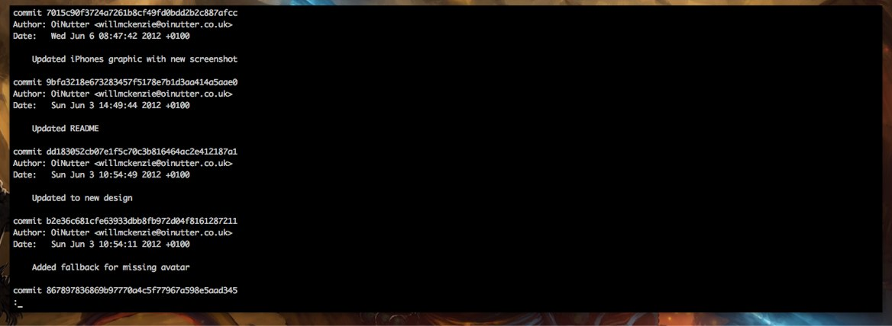
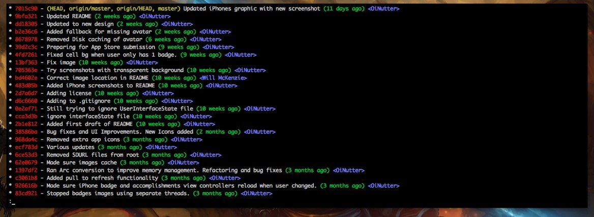

Gustav Jansson
A better git log
I’ve just changed my git log command from the standard:

to the more compact and colorful:

It’s simple to get this log. Just type in:
$ git log --graph --pretty=format:'%Cred%h%Creset -%C(yellow)%d%Creset %s %Cgreen(%cr) %C(bold blue)<%an>%Creset' --abbrev-commit
I guess that’s a bit too long, eh? Let’s just make an alias. Copy and paste the line below on your terminal:
$ git config --global alias.lg "log --color --graph --pretty=format:'%Cred%h%Creset -%C(yellow)%d%Creset %s %Cgreen(%cr) %C(bold blue)<%an>%Creset' --abbrev-commit"
And every time you need to see your log, just type in
$ git lg
Everything here is shamelessly copied from this article: https://coderwall.com/p/euwpig/a-better-git-log